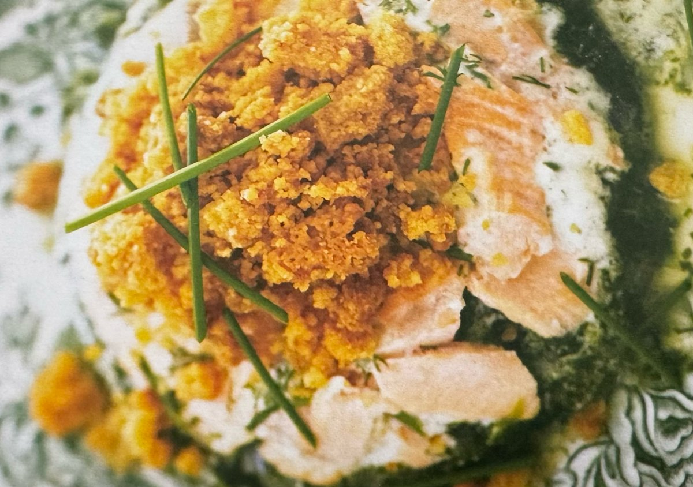

Crumble de Saint-Jacques aux poireaux
Ingredients
- 3 branches de cerfeuil
- 3 blancs de poireaux
- 4 c. à s. d'huile d'olive
- sel
- poivre
- 12 noix de Saint-Jacques
- 1 noisette de beurre
- 15 cl de crème fraîche
- 1 c. à c. de moutarde
- 100 g de beurre
- 10 c. à s. de chapelure

Préparation
Étape 1
Ciseler 3 branches de cerfeuil et émincer 3 blancs de poireaux en fines rondelles. Les cuire 15min à feu doux, à couvert, dans 3 des 4 c. à s. d'huile d'olive avec la moitié du cerfeuil, en remuant. Ajouter du sel et du poivre.
Étape 2
Nettoyer 12 noix de Saint-Jacques (retirer le corail et la veine noire), les rincer, les sécher et les couper en deux dans l’épaisseur. Les saisir 20 sec de chaque côté dans le reste de l’huile.
Étape 3
Beurrer les ramequins avec 1 noisette de beurre. Répartir les poireaux puis les Saint-Jacques. Mélanger 15 cl de crème fraîche, 1 c. à c. de moutarde et le reste du cerfeuil, puis verser sur les noix.
Étape 4
Cuire 25min à 180ºC.
Étape 5
Mélanger 100 g de beurre ramolli avec 10 c. à s. de chapelure. En émietter sur les ramequins, cuire 10min, puis gratiner 2min sous le gril.